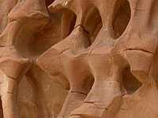

На Красном море
Фотографии сделаны в Шарм Эль Шейхе, в экскурсиях по Синаю,
и у берега отелей
-
Конрад
(сейчас
Coral Sea Sensatori Resort ),
- Конкорд (самый ближний к аэропорту),
- Лавита (там же).
Я плавал без акваланга, только с маской и подходящей камерой.
Начинал с плёночного фотоаппарата в подводном боксе. Дорогие зеркалки
не использую. На сайте показаны снимки, снятые "компактными" цифровыми
камерами:
- Nikon cp880 в мягком футляре Ewa-Marine
- Fuji-f30 в подводном боксе
- Canon D10 (подводная камера без специального бокса)


Отель Конрад
весь год в цветах

Солнце восходит
из-за острова Тиран


Кораллы

Структура древних
кораллов в
песчаных горах

Стая
драгоценных
псевдантиасов
над кораллами

Коралл
Acropora
в центре коралла
Xeniidae


Коралловые черви
Спиробранхус относится к типу кольчатых червей, как и дождевой червь. Живёт в трубке внутри коралла. Классификация: Черви - Кольчатые черви - Серпулиды - Спиробранхус ( Spirobranchus giganteus )


Рыбы Красного моря
 кудрепер")
Крапчатый кудрепер
в охотничьей позиции